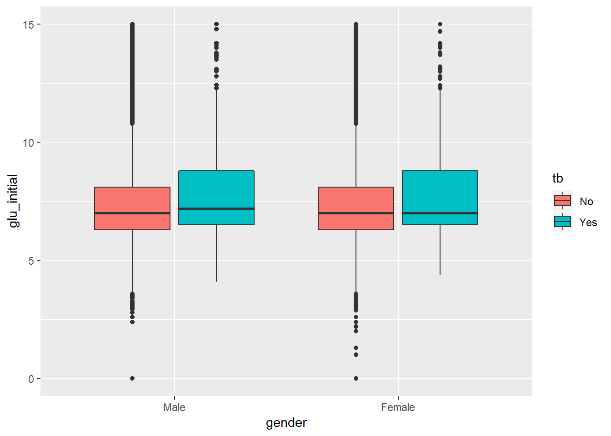
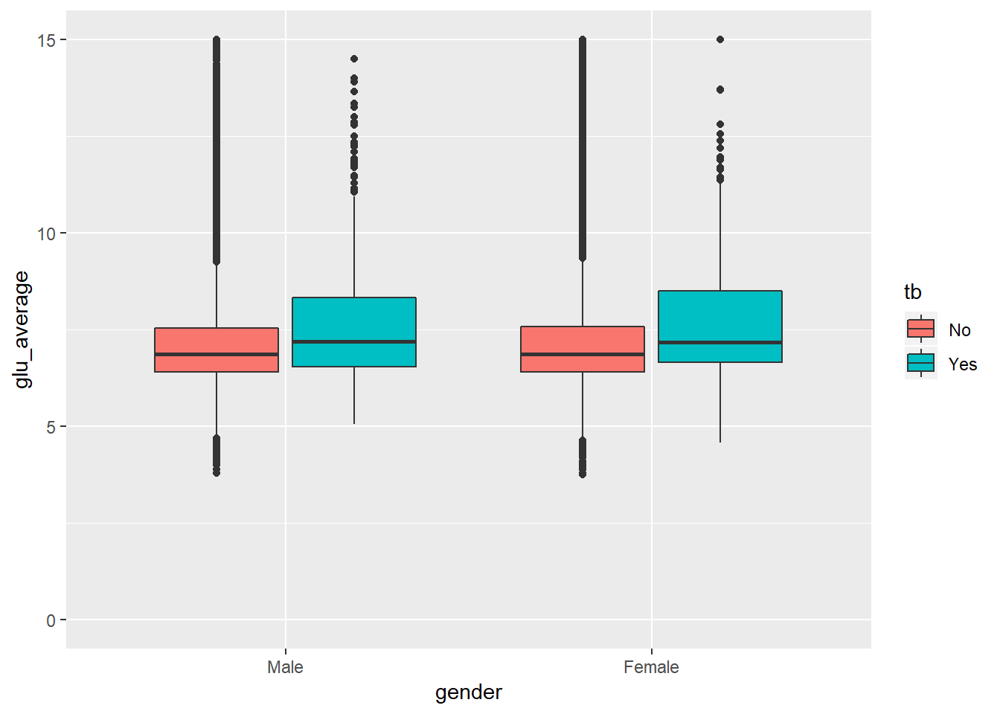
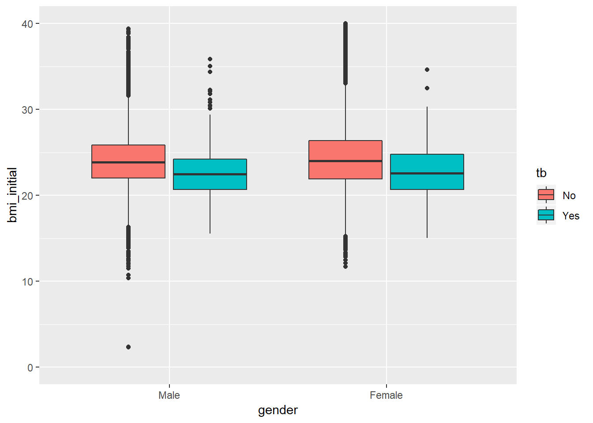
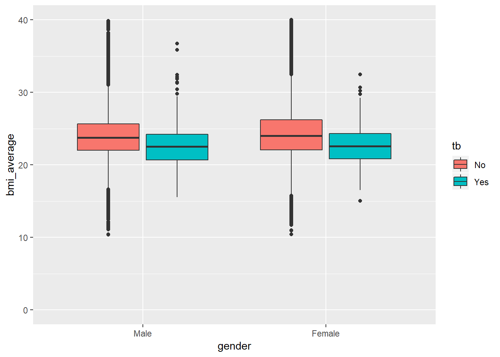
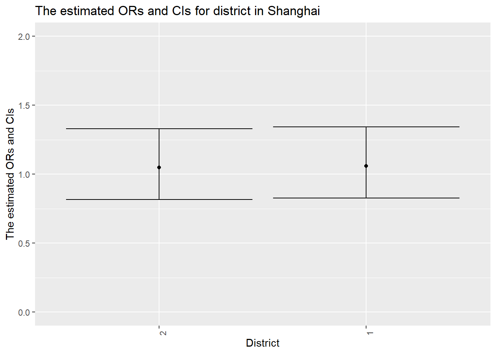
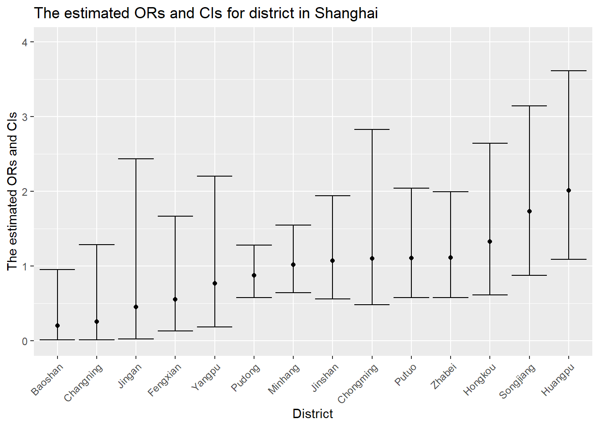

###Import data:
load('./data/df_combine.Rdata')initial glucose distribution
df_combine %>%
ggplot(aes(x = gender, y = glu_initial, fill = tb)) +
geom_boxplot() +
scale_y_continuous(limits=c(0, 15))
Since the range of initial glucose is quite large, we found median and quartiles are a little higher in tb patients than in non-tb.
“average glucose” distribution
df_combine %>%
ggplot(aes(x = gender, y = glu_average, fill = tb)) +
geom_boxplot() +
scale_y_continuous(limits = c(0, 15))
We found median and quartiles are higher in tb patients than in non-tb. Also the range of “average glucose” in follow-up periods for tb patients is wider.
initial bmi distribution
df_combine %>%
ggplot(aes(x = gender, y = bmi_initial, fill = tb)) +
geom_boxplot() +
scale_y_continuous(limits=c(0, 40))
We found median and quartiles are higher in non-tb patients than in tb.
“average bmi” distribution
df_combine %>%
ggplot(aes(x = gender, y = bmi_average, fill = tb)) +
geom_boxplot() +
scale_y_continuous(limits=c(0, 40))
We found median and quartiles of “average bmi” in follow-up periods are higher in non-tb patients than in tb.
df_combine %>%
mutate(urban_rural = as.factor(urban_rural)) %>%
filter(!is.na(urban_rural)) %>%
group_by(urban_rural) %>%
nest() %>%
mutate(models = map(data, ~glm(tb ~ gender + dmage + glu_self_monitor, data = .x, family = binomial())),
ci = map(.x=models, ~confint(.x)),
or = map(models, broom::tidy),
ci = map(ci, broom::tidy)) %>%
select(-data,-models) %>%
unnest() %>%
filter(term == "glu_self_monitorNo") %>%
select(urban_rural, or = estimate, ci_low = "X2.5..", ci_high = "X97.5..") %>%
mutate(or = exp(or), ci_low = exp(ci_low), ci_high = exp(ci_high), urban_rural = fct_reorder(urban_rural, or)) %>%
ggplot(aes(x = urban_rural, y = or)) +
geom_point() +
geom_errorbar(aes(ymin = ci_low, ymax = ci_high)) +
labs(
title = "The estimated ORs and CIs for district in Shanghai",
x = "District",
y = "The estimated ORs and CIs"
) +
theme(axis.text.x = element_text(angle = 90, hjust = 1)) +
scale_y_continuous(limits=c(0, 2))
Obtain the estimate and confidence interval of the adjusted odds ratio for having tb comparing diabetes who regularly monitor glucose to those who don’t do keeping all other variables fixed in urban or rural area.
df_combine %>%
mutate(urban_rural = as.factor(urban_rural)) %>%
filter(!is.na(district), !district %in% c("Xuhui", "Qingpu", "Jiading")) %>%
group_by(district) %>%
nest() %>%
mutate(models = map(data, ~glm(tb ~ gender + dmage + glu_self_monitor, data = .x, family = binomial())),
ci = map(.x=models, ~confint(.x)),
or = map(models, broom::tidy),
ci = map(ci, broom::tidy)) %>%
select(-data,-models) %>%
unnest() %>%
filter(term == "glu_self_monitorNo") %>%
select(district, or = estimate, ci_low = "X2.5..", ci_high = "X97.5..") %>%
mutate(or = exp(or), ci_low = exp(ci_low), ci_high = exp(ci_high), district = fct_reorder(district, or)) %>%
ggplot(aes(x = district, y = or)) +
geom_point() +
geom_errorbar(aes(ymin = ci_low, ymax = ci_high)) +
labs(
title = "The estimated ORs and CIs for district in Shanghai",
x = "District",
y = "The estimated ORs and CIs"
) +
theme(axis.text.x = element_text(angle = 45, hjust = 1)) +
scale_y_continuous(limits=c(0, 4))
For each district in Shanghai, obtain the estimate and confidence interval of the adjusted odds ratio for having tb comparing diabetes who regularly monitor glucose to those who don’t monitor glucose regularly keeping all other variables fixed.